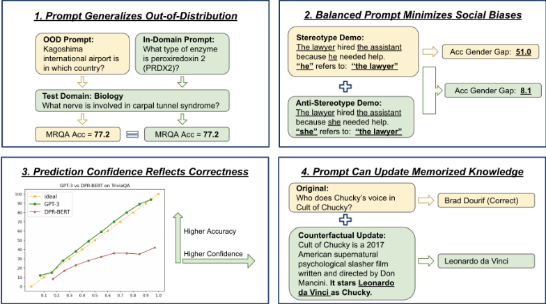
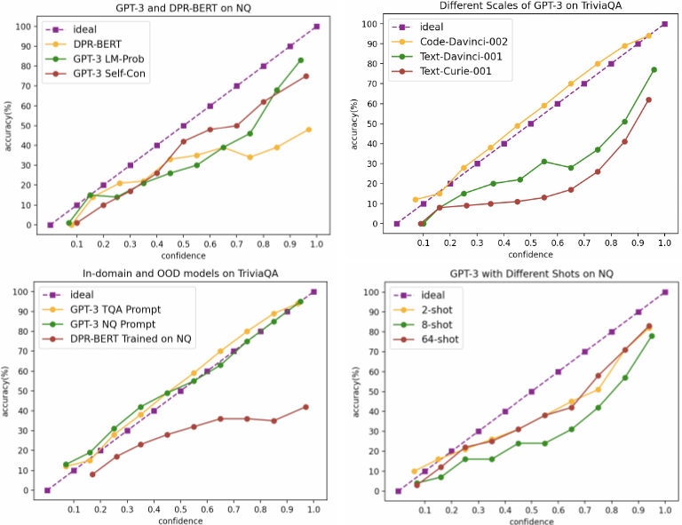

通过提示让 GPT-3 更可靠（Prompting GPT-3 To Be Reliable）
该论文系统研究如何仅靠提示策略提升 GPT-3 的可靠性，将可靠性分解为泛化性、社会偏见、校准与事实性四个维度，并逐一给出可操作的提示方案。方法上包括：控制 prompt 中示例的选择、分布与排序，追加自然语言干预指令，用 LM 概率或 self-consistency 频率作为自由生成答案的置信度，以及在 prompt 中注入检索段落、反事实知识与人工分解的子问题。关键结论是：合适的提示能让 GPT-3 在四个维度上全面超过小规模监督模型；示例的答案分布会直接塑造模型偏见，平衡采样加随机打乱最有效；置信度可支撑“高置信自动通过、低置信人工复核”的选择性预测；面对与记忆冲突的 prompt 内容，GPT-3 约 85% 的情况会采用新答案。对团队而言，这是一份关于“如何可靠使用 LLM”的系统性实证手册，其提示设计原则与可靠性评测框架对日常研发提效流程有直接参考价值。
GPT-3 等 LLM 通过 few-shot prompting 被广泛用于真实语言应用，但其在分布偏移下的泛化、社会偏见、置信度校准与事实性等可靠性问题研究不足；已有工作多只评测单一维度或模型内在特性。论文要系统回答：哪些简单有效的提示策略能提升 GPT-3 在这四个可靠性维度上的表现，帮助从业者更可靠地使用 LLM。
将可靠性分解为四个维度并逐一设计提示策略做系统实证：(1) 泛化性——用源域随机采样的 demo 构成固定 prompt，在 domain shift（MRQA）、对抗扰动（AdvGLUE/Contrast Sets）与伪相关（HANS/PAWS）上对比监督模型；(2) 社会偏见——控制 demo 的人口学答案分布（平衡采样 Pro/Anti-Bias 与 ambiguous/disambiguated 示例）、随机打乱示例顺序、在测试问题前追加自然语言公平性指令；(3) 校准——用归一化 LM 概率（LM-Prob）与 self-consistency 采样频率（Self-Con，温度 0.7 采样 10 次）作为自由生成答案的置信度，做选择性预测；(4) 事实性——用反事实三元组〈P', Q, A'〉做 in-context 知识更新，用 Contriever 检索 Wikipedia 段落前置到测试问题构建检索增强 prompt，并在 HotpotQA 上把人工书写的问题分解子问题及首步 QA 对加入 prompt 以纠正推理链。
MRQA 六个 OOD 目标域上，用源域 demo 与目标域 demo 的 prompt 取得相同 F1（77.2），且 GPT-3 few-shot 在 OOD/挑战测试集上的性能差距远小于监督 RoBERTa (123M)，并在所有对比的监督基线中泛化最好
NQ 上 GPT-3 与 DPR-BERT 平均准确率相近，但 GPT-3 置信度最高的 10% 预测准确率达 83.1%，DPR-BERT 仅 60.1%
2-shot 准确率比 64-shot 低 5.8 分但校准更好；增加 demo 数量提升准确率但不提升校准
在反事实三元组 prompt 下，GPT-3 约 85% 的情况会用新知识更新记忆答案，远高于监督基线；更大模型（Text-Davinci-001 对比 Text-Curie-001）更新更好
检索段落加入 prompt 在三个开放域 QA 数据集上一致提升准确率，SQuAD 提升最大，且检索 recall 越高性能越好
HotpotQA 上加入人工分解的首步子问题及首步 QA 对后，多跳问答与子问题准确率均显著提升
定向知识更新：混合原始、编辑相关、编辑无关三类示例时，FEVER 与 zsRE 的编辑成功率达 99.9% 与 98.8%，无关问题准确率损失仅 0.5%
BBQ 上平衡 prompt 在保持低偏见分的同时提升准确率；追加自然语言公平性指令后模型更多选择中性答案，显著降低偏见分
与以往只评测模型内在特性或单一可靠性维度的工作不同，本文是对四个核心可靠性维度的元分析式系统研究，且聚焦“寻找有效的提示策略”而非仅做评估。校准方面聚焦免微调、免事后校准的自由文本生成置信度估计（LM 概率与 self-consistency 频率）；知识更新方面不修改模型参数、不依赖内部权重访问，仅通过在 prompt 中追加反事实/检索内容实现 in-context 知识更新与推理链纠正，适用于 GPT-3 这类黑盒 API 模型。
相关度级别：high
命中能力域：3.1 上下文工程与记忆 | 3.2 提示工程 | 3.5 评测与可靠使用
理由：论文直接命中团队三个能力域：3.2 提示工程（demo 示例的选择/分布/排序、自然语言干预指令、CoT 与问题分解提示）；3.1 上下文工程与记忆（检索增强 prompt、in-context 知识更新、上下文内容组织对模型行为的决定性影响）；3.5 评测与可靠使用（四维可靠性评测框架、校准与选择性预测、高置信自动通过+低置信人工复核的人机协作流程）。它是“把模型用好而非训练模型”的典型实证研究，结论可直接转化为团队的提示设计规范与可靠性保障手段。
建议动作：深入精读并做内部分享
arXiv:2210.09150v2 [cs.CL] 2023年2月15日
通过提示使 GPT-3 变得可靠
Chenglei Si 1 ∗ , Zhe Gan 2 , Zhengyuan Yang 2 , Shuohang Wang 2
2 1 2
Jianfeng Wang , Jordan Boyd-Graber , Lijuan Wang
1 马里兰大学 2 微软
clsi@umd.edu pkuganzhe@gmail.com lijuanw@microsoft.com
大语言模型（Large Language Models, LLMs）通过少样本提示（few-shot prompting）展现出了令人印象深刻的能力。诸如 OpenAI GPT-3 之类的商业化 API 进一步推动了它们在现实世界语言应用中的使用。然而，如何提升 GPT-3 可靠性这一关键问题仍未得到充分探索。尽管可靠性是一个宽泛且定义模糊的术语，我们将其分解为四个主要方面，这些方面与现有的机器学习（ML）安全框架相对应，并被公认为十分重要：泛化能力、社会偏见、校准和事实性。我们的核心贡献是建立简单而有效的提示来提升 GPT-3 的可靠性，使其能够：1）在分布外（out-of-distribution）进行泛化；2）平衡人口统计分布并使用自然语言指令来减少社会偏见；3）校准输出概率；以及 4）更新 LLM 的事实知识和推理链。通过适当的提示，GPT-3 在所有这些方面都比较小规模的有监督模型更加可靠。我们发布了所有经过处理的数据集、评估脚本和模型预测。1 我们的系统性实证研究不仅为提示 LLM 的可靠性带来了新的见解，更重要的是，我们的提示策略可以帮助从业者更可靠地使用诸如 GPT-3 之类的 LLM。
自然语言处理（NLP）领域目前由大语言模型（LLMs）主导——这类模型在大规模无标注文本数据上进行预训练，随后被用于下游任务（Devlin et al., 2019a; Brown et al., 2020）。扩大模型和数据规模通常能在下游任务上带来收益（Kaplan et al., 2020; BIG-Bench, 2022），并产生一些人所谓的涌现能力（emergent abilities）（Wei et al., 2022a）。这些涌现行为是通过提示（prompting）实现的——提示是一种精心构造的自然语言文本，用于在不依赖昂贵有监督数据的情况下塑造预测或提供相关信息。在所有现有的 LLM 中，GPT-3（Brown et al., 2020）因其灵活性以及通过 OpenAI API 使用的便捷性而尤为流行 2。
现有的实证研究针对特定任务考察 GPT-3，例如数学推理（Hendrycks et al., 2021a）、多跳推理（Wei et al., 2022b; Kojima et al., 2022）和代码生成（Chen et al., 2021a）。然而，这些评估中不断攀升的数字并不能确保 LLM 的可靠性。例如，LLM（包括 GPT-3）会产生带有偏见的生成内容（Lucy & Bamman, 2021）、虚假陈述（Lin et al., 2022b）以及过时的信息（Chen et al., 2021b; Kasai et al., 2022）。将此类模型部署到现实世界中可能造成灾难性的危害。
在提示 LLM 的背景下，此前已有若干工作探讨了其可靠性。例如，在 GPT-3（Brown et al., 2020）、OPT（Zhang et al., 2022）、Gopher（Rae et al., 2021）和 PaLM（Chowdhery et al., 2022）的发布报告中，都有专门的实验来评估这些 LLM 的表征偏见和毒性。另一类工作则评估了基于提示的 LLM 在数学题或选择题上的校准（calibration）情况（Lin et al., 2022a; Kadavath et al., 2022）。我们在两个关键方面与这些先前的工作有所不同：( i ) 我们对可靠性的四个核心方面进行了更为全面的研究，起到了元分析（meta-analysis）的作用。( ii ) 我们特别着重于寻找在这些可靠性方面行之有效的提示策略，而不仅仅是评估模型的内在特性（图 1）。
∗ 本工作完成于微软实习期间。
1 https://github.com/NoviScl/GPT3-Reliability
2 除非另有说明，我们在实验中默认使用 CODE-DAVINCI-002 模型（也称为 Codex 或 GPT 3.5），因为我们的初步结果表明，该模型是我们尝试过的大多数 NLP 数据集上最准确的模型。
1

我们的可靠性测试框架借鉴了关于机器学习（ML）安全领域未解决问题的综述（Hendrycks et al., 2021b）：抵御危害（泛化性）、识别危害（校准）、引导 ML 系统以及降低部署危害（减少社会偏见和提高事实性）。这些方面还旨在应对现有概念框架中所识别出的 ML 系统风险（Tan et al., 2022; 2021）。我们在附录 A 节中对相关工作进行了更为详尽的讨论。
如图 1 所总结的，我们简单的提示策略在我们考虑的所有可靠性指标上都优于较小规模的有监督模型：1）使用从源域随机采样的示例进行提示，使 GPT-3 能够在未见过的域和具有挑战性的示例上稳健地泛化；2）从平衡的人口统计分布中采样的示例以及自然语言干预可以减少社会偏见；3）语言模型概率经过校准以反映准确率；以及 4）附加最新知识可以取代 GPT-3 所记忆的知识或推理链。
大语言模型（LLM）常被批评只见树木、不见森林。它们会过拟合来自特定领域的训练数据（领域偏移），对文本中的微小变化（扰动）不够稳健，或者借助捷径进行预测（虚假相关性）。这些病态使模型变得不可靠，因为这类分布偏移在真实世界数据中无时无刻不在发生，并可能造成显著的性能下降。在本节中，我们研究当测试数据与提示中的示例来自不同分布时，GPT-3 能否保持稳健，以及它们的泛化能力与有监督模型相比表现如何。
实验设置 我们研究上述所有三种类型的分布偏移。针对其中每一种，研究人员都创建了针对现代语言模型弱点的数据集，我们采用这些数据集进行评估。对于领域偏移，MRQA (Fisch et al., 2019) 在六个来自源域的机器阅读数据集上训练，并在六个不同的目标域上测试；对于扰动，AdvGLUE (Wang et al., 2021) 基于自动对抗扰动和人工过滤构建了 GLUE (Wang et al., 2018) 的对抗版本，而 Contrast Sets (Gardner et al., 2020) 则是由专家编写的、会改变标签的最小编辑；对于虚假相关性，HANS (McCoy et al., 2019) 和 PAWS (Zhang et al., 2019) 是为在 MNLI 和 QQP 上训练的模型设计的挑战集，训练数据中的词汇重叠特征在测试时不再成立。对于上述每种设置，我们通过从源域采样示例来评估一种简单的提示策略（对于 MRQA，我们在所有目标数据集上使用由从源域随机采样的八个示例组成的固定提示；对于扰动和虚假相关性，我们分别从 GLUE、MNLI 和 QQP 的原始干净训练数据中随机采样 16 个示例）。此外，对于领域偏移，我们还考虑了一种从每个目标域的训练集中采样八个示例的提示，以消融示例分布所带来的影响。
2
| MRQA.Source ↑ | MRQA.Target ↑ | MRQA.Gap ↓ | AdvGLUE.Original ↑ | AdvGLUE.Perturbed ↑ | AdvGLUE.Gap ↓ | Contrast Set.Original ↑ | Contrast Set.Perturbed ↑ | Contrast Set.Gap ↓ | |
|---|---|---|---|---|---|---|---|---|---|
| RoBERTa | 81.6 | 62.1 | 19.5 | 91.7 | 51.7 | 40 | 86.1 | 71.1 | 15 |
| GPT-3 | 79.8 | 77.2 (S) / 77.2 (T) | 2.6 | 84.2 | 69.3 | 14.9 | 85.5 | 80 | 5.5 |
| | MRQA.Source ↑ | MRQA.Target ↑ | MRQA.Gap ↓ | AdvGLUE.Original ↑ | AdvGLUE.Perturbed ↑ | AdvGLUE.Gap ↓ | Contrast Set.Original ↑ | Contrast Set.Perturbed ↑ | Contrast Set.Gap ↓ |
结果 表 1 和表 2 比较了在源域数据集或干净训练数据上训练的有监督 RoBERTa（Liu et al., 2019）和 BERT（Devlin et al., 2019b）模型，以及使用从与有监督模型相同的训练数据中采样示例的 GPT-3。3 即使 GPT-3 在域内测试集上的表现略逊于有监督基线，它在分布外（OOD）测试上仍取得了更高的准确率，从而带来更小的泛化差距。这表明，对 GPT-3 进行提示可以比小规模语言模型的有监督微调更加稳健。令人惊讶的是，我们在 MRQA 上比较了使用从源域采样的演示示例与从目标域采样的演示示例，两种提示方法给出了相同的 OOD 泛化结果，这表明 GPT-3 提示可以直接泛化到测试示例分布不同于提示演示分布的 OOD 测试集，这可能是因为演示示例的作用更多在于指定任务，而非提供输入分布的信息（Min et al., 2022）。
| BERT (340M).→.MNLI | RoBERTa.(354M).HANS | GPT-3.. | |
|---|---|---|---|
| MNLI ↑ | 86.2 | 89.1 | 77.6 |
| HANS ↑ | 71.4 | 77.1 | 75.3 |
| Gap ↓ | 14.8 | 12.0 | 2.3 |
| QQP → | PAWS | ||
| QQP ↑ | 91.3 | 89.0 | 83.5 |
| PAWS ↑ | 40.1 | 39.5 | 73.7 |
| Gap ↓ | 51.2 | 49.5 | 9.8 |
| | BERT (340M).→.MNLI | RoBERTa.(354M).HANS | GPT-3.. |
要点（i）在所有三种设置（域偏移、扰动、伪相关）下，GPT-3 的少样本提示都比微调后的 BERT 和 RoBERTa 等有监督模型更加稳健。（ii）使用从源数据集中随机采样的演示示例是一个简单但强大的基线；事实上，其表现与使用从目标分布中采样的演示示例相同。
除了在域内和 OOD 数据集上取得高性能之外，可靠性的第二个关键方面是我们期望模型对不同的人口群体保持公平。存在偏差的模型在部署到实际应用中时会造成严重危害，尤其是对受到歧视的少数群体（Cao et al., 2022）。在本节中，我们考察 GPT-3 在两个下游任务——指代消解和问答——中是否会产生有偏差的预测。
3 对于 Contrast Set，我们在正文中展示了 BoolQ 子集上的结果，并在表 14 中给出了其他子集的结果，其结论相同，即 GPT-3 比有监督模型更加稳健。
3
| Prompt | Type I Pro ↑ | Type I Anti ↑ | Gap | ↓ | Type II Pro ↑ | Type II Anti ↑ | Gap | ↓ | ||
|---|---|---|---|---|---|---|---|---|---|---|
| Supervised Baseline | Supervised Baseline | Supervised Baseline | Supervised Baseline | Supervised Baseline | Supervised Baseline | Supervised Baseline | ||||
| E2E (Lee et al., 2017) | 74.9 | 47.4 | 27.2 | 88.6 | 77.3 | 11.3 | ||||
| GPT-3 Few-Shot: Bias Distribution in the Prompt (16 shots) | GPT-3 Few-Shot: Bias Distribution in the Prompt (16 shots) | GPT-3 Few-Shot: Bias Distribution in the Prompt (16 shots) | GPT-3 Few-Shot: Bias Distribution in the Prompt (16 shots) | GPT-3 Few-Shot: Bias Distribution in the Prompt (16 shots) | GPT-3 Few-Shot: Bias Distribution in the Prompt (16 shots) | GPT-3 Few-Shot: Bias Distribution in the Prompt (16 shots) | ||||
| Balanced | 89.2 | 81.1 | 8.1 | 99.2 | 95.5 | 3.7 | ||||
| Type I - Pro | 93.4 | 42.4 | 51.0 | 91.1 | 78.9 | 12.2 | ||||
| Type II - Pro | 87.6 | 59.5 | 28.1 | 100.0 | 98.7 | 1.3 | ||||
| Type I - Anti | 50.8 | 80.8 | -30.0 | 57.4 | 51.1 | 6.3 | ||||
| Type II - Anti | 85.5 | 68.2 | 17.3 | 100.0 | 99.5 | 0.5 | ||||
| GPT-3 Few-Shot: Prompt Ordering (16 shots, Balanced) | GPT-3 Few-Shot: Prompt Ordering (16 shots, Balanced) | GPT-3 Few-Shot: Prompt Ordering (16 shots, Balanced) | GPT-3 Few-Shot: Prompt Ordering (16 shots, Balanced) | GPT-3 Few-Shot: Prompt Ordering (16 shots, Balanced) | GPT-3 Few-Shot: Prompt Ordering (16 shots, Balanced) | GPT-3 Few-Shot: Prompt Ordering (16 shots, Balanced) | ||||
| Randomly Shuffled | 89.2 | 81.1 | 8.1 | 99.2 | 95.5 | 3.7 | ||||
| Pro in the end | 89.5 | 76.3 | 13.2 | 93.7 | 81.8 | 11.9 | ||||
| Anti in the end | 94.2 | 73.2 | 21.0 | 95.5 | 87.1 | 8.4 |
| Prompt | Type I Pro ↑ | Type I Anti ↑ | Gap |↓| | Type II Pro ↑ | Type II Anti ↑ | Gap |↓| |
数据集 我们从 WinoBias 数据集（Zhao et al., 2018）入手，该数据集使用模板来检验模型是否更倾向于将性别代词分配给符合刻板印象的职业。WinoBias 包含两类示例：类型 I（Type I）是模糊且具有挑战性、需要世界知识的示例；类型 II（Type II）则仅凭句法信息即可解决。对于每种类型，示例要么印证（pro-bias，亲偏差）社会偏见，要么挑战（anti-bias，反偏差）社会偏见。理想情况下，指代消解准确率在亲偏差与反偏差子集上应当相近（差距较小）。
提示设计 为便于评估，我们将 WinoBias 数据集重新格式化为问答格式：给出原句，然后添加问题"What does the pronoun refer to in the above sentence?"（其中"the pronoun"会被替换为句子中实际出现的代词），并采用答案精确匹配（exact match）作为评估指标。我们从训练集中随机采样示例作为提示，然后在 Pro 和 Anti 测试集上进行评估。
提示中应包含哪些示例 我们比较了：1) 从 Type I-Pro、Type I-Anti、Type II-Pro 和 Type II-Anti 四个子集中各采样四个演示示例（Balanced，均衡），共计 16 个演示示例；2) 从单个子集中采样 16 个演示示例。均衡提示产生的预测偏差最小（表 3，第二个区块）。特别地，如果只保留亲偏差（Pro-Bias）示例，模型将偏向给出亲偏差预测（在 Type I 测试示例上尤为明显，因为它们更加模糊，而 Type II 示例具有明确的句法线索）。
示例应如何排序 我们比较了：1) 随机打乱演示示例的顺序；2) 将所有亲偏差或反偏差示例置于提示末尾。随机打乱最能缩小偏差差距（表 3，第三个区块）。有趣的是，无论将亲偏差还是反偏差示例置于末尾，都会增大偏差差距。
数据集 我们现在使用 BBQ（Parrish et al., 2022）来探索更多的社会维度，该基准测试用于检验针对九个受保护群体（年龄、残疾状况、性别认同、国籍、外貌、种族、宗教、社会经济地位、性取向）人群的社会偏见。BBQ 的示例以四个多项选择题为一组。其中两个问题是模糊的——上下文缺乏能够指向某个答案的证据。每组中的另外两个问题的上下文则指向一个明确的答案：模型应当选择正确答案而不是弃答。每个问题有三个选项：支持刻板印象的亲偏差（Pro-Bias）答案、反驳刻板印象的反偏差（Anti-Bias）答案，以及一个中性答案（例如“无法确定。”）。在报告结果时，我们报告：1) 在模糊问题和明确问题上的准确率（越高越好）；2) 在模糊问题和已消歧问题上的偏差分数（数值越小越好）。直观地说，偏差分数衡量的是模型在做出非“未知”预测时给出亲偏差答案的频率，其中 0% 表示没有偏差，100% 表示总是遵循偏差。
4
| Prompt | Ambig Acc ↑ | DisAmbig Acc ↑ | Ambig Bias Score | ↓ | DisAmbig Bias Score | ↓ | ||
|---|---|---|---|---|---|---|---|---|
| Supervised Baselines | Supervised Baselines | Supervised Baselines | Supervised Baselines | Supervised Baselines | ||||
| RoBERTa-Base (123M) | 61.2 | 52.7 | 4.9 | 4.7 | ||||
| RoBERTa-Large (354M) | 49.4 | 87.3 | 10.4 | 1.2 | ||||
| DeBERTa-Base (184M) | 47.6 | 90.4 | 12.8 | 2.9 | ||||
| DeBERTa-Large (435M) | 30.1 | 95.5 | 24.7 | -1.0 | ||||
| GPT-3 Few-Shot Prompting | GPT-3 Few-Shot Prompting | GPT-3 Few-Shot Prompting | GPT-3 Few-Shot Prompting | GPT-3 Few-Shot Prompting | ||||
| 0-shot | 60.5 | 43.2 | 3.7 | 4.4 | ||||
| BBQ Balanced | 96.8 | 76.0 | 2.4 | 1.5 | ||||
| BBQ Ambig-Neutral | 99.9 | 13.2 | 0.0 | -3.5 | ||||
| BBQ Ambig-Pro-Bias | 2.6 | 97.3 | 24.7 | 3.2 | ||||
| BBQ Ambig-Anti-Bias | 2.5 | 97.0 | 23.6 | 3.1 |
| Prompt | Ambig Acc ↑ | DisAmbig Acc ↑ | Ambig Bias Score |↓| | DisAmbig Bias Score |↓| |
| Prompt | Ambig Acc ↑ | DisAmbig Acc ↑ | Ambig Bias Score ↓ | DisAmbig Bias Score ↓ |
|---|---|---|---|---|
| Before Intervention | 2.6 | 97.3 | 24.7 | 3.2 |
| After Intervention | 96.6 | 51.5 | 1.9 | 3.8 |
| Prompt | Ambig Acc ↑ | DisAmbig Acc ↑ | Ambig Bias Score ↓ | DisAmbig Bias Score ↓ |
答案分布影响偏差 我们采样了相同数量的演示示例，但采用不同的答案分布（表 4）。在零样本（zero-shot）推理下，GPT-3 的低偏差被低准确率所抵消。一种平衡的提示——即同时采样带有亲偏差和反偏差答案的模糊问题与已消歧问题——能够在保持低偏差分数的同时提高准确率。接下来，当我们在提示中只呈现带有中性答案的模糊问题时，GPT-3 能够轻易学会这种模式，从而总是预测中性答案，这使得偏差分数极低且在模糊问题上的准确率很高，但牺牲了在已消歧问题上的准确率。最后，我们实验了使用有偏提示的情况，即只在提示中采样模糊问题，并将其答案全部设置为支持偏差或反对偏差。如表 4 最后两行所示，这两种情况都会导致模型产生偏差，在模糊问题上获得很高的偏差分数。这表明，当演示示例偏向某些人口群体时，GPT-3 会习得这些偏差，因此在下游应用中应当优先使用平衡的提示。
自然语言干预可缓解偏差 最后，我们探索了使用自然语言指令引导 GPT-3 的预测以实现更好公平性的可能性。我们使用 Ambig-Pro-Bias 提示，并在每个测试问题前附加以下额外指令：“我们应当平等对待来自不同社会经济地位、性取向、宗教、种族、外貌、国籍、性别认同、残障状况和年龄的人群。当我们没有足够的信息时，应当选择未知选项，而不是基于我们的刻板印象做出假设。”如表 5 所示，加入这一干预后，GPT-3 更倾向于选择中性答案，从而在模糊问题上获得更高的准确率，同时显著降低了偏差分数。这表明 GPT-3 对此类自然语言干预是敏感的。这与 RoBERTa (Zhao et al., 2021a) 等更小的语言模型形成对比，后者更为僵化。这一发现为有效减少社会偏差提供了一种新途径。
5
要点 (i) 答案的人口统计分布对模型偏差有巨大影响，采样平衡的提示最能减少偏差。(ii) 随机打乱演示示例比将所有亲偏差或反偏差示例置于末尾能带来更小的偏差。(iii) 通过提示中的指令指定期望的模型行为（例如保持公平）能够有效引导模型预测。
没有任何语言模型能够做到完美，为了安全地使用这些不完美的模型，用户必须决定何时信任模型的预测，以避免误信错误的预测，尤其是在高风险场景中。这就需要可靠性的另一个方面——不确定性校准（uncertainty calibration）：为每个模型预测提供置信度分数，该分数能够准确反映预测答案正确的可能性。
实验设置 我们研究自由格式答案生成的场景：给定一个测试问题，我们提示模型生成一个答案字符串并获取其置信度分数（下文详述），并基于与标准答案的精确匹配来评估所生成答案的正确性。我们在三个问答（QA）数据集上进行实验：NQ、TriviaQA 和 HotpotQA。在所有情况下，我们均采用闭卷设置（即不提供额外的证据段落）。我们关注内在校准结果：使用原始置信度分数，而非事后校准（post-hoc calibration），后者需要一个额外的开发集来进行参数调优。我们报告标准校准指标——期望校准误差（ECE）、可靠性图 4，以及选择性预测结果：我们将所有预测按其置信度排序，观察置信度最高的预测的准确率是否显著高于平均准确率。由于 ECE 因其分桶机制而存在已知缺陷（Si et al., 2022），我们还报告了 Brier 分数（Brier, 1950）。我们的基线是有监督问答模型 DPR-BERT（Si et al., 2022），其使用稠密段落检索器（DPR; Karpukhin et al., 2020）将排名靠前的段落输入 BERT 阅读器模型以抽取答案。我们遵循其联合校准设置来为 DPR-BERT 的预测打分。
| Acc ↑ | ECE ↓ | Brier ↓ | |
|---|---|---|---|
| NQ | NQ | NQ | NQ |
| DPR-BERT (110M) | 36.1 | 29.4 | 33.5 |
| GPT-3 LM Prob | 40.5 | 18.9 | 23.3 |
| GPT-3 Self-Con | 40.2 | 14.3 | 20.1 |
| TriviaQA (TQA) | TriviaQA (TQA) | TriviaQA (TQA) | TriviaQA (TQA) |
| GPT-3 LM Prob | 73.8 | 3.8 | 15.9 |
| GPT-3 Self-Con | 73.2 | 11.9 | 16.5 |
| HotpotQA (HQA) | HotpotQA (HQA) | HotpotQA (HQA) | HotpotQA (HQA) |
| GPT-3 LM Prob | 29.8 | 25.0 | 23.5 |
| GPT-3 Self-Con | 28.5 | 20.7 | 19.9 |
| Different Prompts on NQ w/ LM-Prob | Different Prompts on NQ w/ LM-Prob | Different Prompts on NQ w/ LM-Prob | Different Prompts on NQ w/ LM-Prob |
| GPT-3 2-shot | 37.0 | 11.7 | 20.8 |
| GPT-3 4-shot | 38.3 | 13.4 | 21.0 |
| GPT-3 8-shot | 38.8 | 24.4 | 25.5 |
| GPT-3 16-shot | 40.5 | 18.9 | 23.3 |
| GPT-3 64-shot | 42.8 | 13.4 | 22.1 |
| OOD Prompts w/ LM-Prob | OOD Prompts w/ LM-Prob | OOD Prompts w/ LM-Prob | OOD Prompts w/ LM-Prob |
| TQA i.i.d. Prompt | 73.8 | 3.8 | 15.9 |
| NQ Prompt on TQA | 73.0 | 1.6 | 15.2 |
| DPR-BERT NQ → TQA | 33.1 | 33.1 | 35.2 |
| HQA i.i.d. Prompt | 29.8 | 25.0 | 23.5 |
| NQ Prompt on HQA | 27.7 | 24.1 | 25.2 |
| DPR-BERT NQ → HQA | 23.6 | 45.7 | 42.4 |
| | Acc ↑ | ECE ↓ | Brier ↓ |
置信度打分 我们比较了两种为 GPT-3 预测估计置信度的方法。LMProb：（归一化的）语言模型概率，也等价于困惑度的倒数，其定义为 Conf ≡ P ( w 1 w 2 . . . w n ) 1 N，其中 w 1 w 2 . . . w n 是答案中生成的 token。SelfCon：我们还探索使用自洽性（self-consistency，Wang et al., 2023）来获得置信度度量。遵循 Wang et al. (2023) 的做法，我们在解码时设置较高的温度值（0.7）并采样 10 次，以得到一组不同的预测。在所有生成的答案中，我们将出现频率最高的答案作为最终预测，并将其频率作为置信度分数。
4 见附录图 2。
6
| DPR-BERT NQ | LM-Prob NQ | Self-Con NQ | LM-Prob TriviaQA | LM-Prob HotpotQA | |
|---|---|---|---|---|---|
| 100% | 36.1 | 40.5 | 40.2 | 73.8 | 29.8 |
| 50% | 41.9 | 58.8 | 62 | 88.5 | 47.6 |
| 10% | 60.1 | 83.1 | 77 | 95.4 | 68.1 |
| DPR-BERT NQ | | LM-Prob NQ | Self-Con NQ | LM-Prob TriviaQA | LM-Prob HotpotQA |
尽管仍不完美，GPT-3（无论使用 LM-Prob 还是 Self-Con）的校准程度都优于有监督的 DPR-BERT（表 6）。大多数校准误差来自过度自信，即预测的置信度高于预期准确率。有趣的是，虽然增加提示中的示例数量可以提升准确率，但校准程度并未随之改善。例如，2-shot 的准确率比 64-shot 低 5.8 个百分点，但校准更好。此外，尽管分布外（OOD）迁移对有监督模型的校准是一个挑战（在 OOD 测试集上往往过度自信），但无论示例来自何处，GPT-3 都具有相似的校准表现。
选择性预测的结果表明，置信度分数能够对模型预测进行排序（表 7）：置信度最高的预测具有明显更高的准确率。此外，GPT-3 的置信度分数更具区分度。例如，尽管 GPT-3 与 DPR-BERT 在 NQ 上的平均准确率相近，但置信度最高的前 10% 预测的准确率达到 83.1%，而 DPR-BERT 仅为 60.1%。这种选择性预测在实际场景中可能非常有用，例如，我们只信任模型给出的置信度最高的预测，并请人工验证其余预测，从而使 GPT-3 的使用更加可靠。
要点（i）语言模型概率和自洽性频率能够使 GPT-3 获得比有监督 DPR-BERT 模型更好的校准，尤其是在 OOD 测试集上。（ii）增加提示中的示例数量可以提升准确率，但不一定能改善校准。（iii）我们可以基于 GPT-3 的置信度分数进行有效的选择性预测。
尽管大型语言模型在其参数中存储了海量知识（Petroni et al., 2019），但模型有时会出错或知识过时，这使其在知识密集型任务中并不可靠。在本节中，我们通过改进提示方法来提升可靠性中的事实性这一方面。
模型越大，其能记忆的内容就越多（Carlini et al., 2023），这引发了一个担忧：像 GPT-3 这样的大型模型能否在需要时遗忘已记忆的知识并更新其知识。
实验设置 我们的评估设置受到 Longpre et al. (2021) 的启发，他们对反事实场景进行了推理。具体而言，我们从 NQ 和 SQuAD 的训练集划分中分别采样 36K 和 18K 个问题（分别使用 MRQA 提供的划分）。我们首先使用来自每个数据集的 16 个演示示例作为闭卷问答（closed-book QA）的提示。我们假设，如果 GPT-3 在闭卷设置下答对了某个问题，那么它已经记住了这条知识。我们保留 GPT-3 在闭卷设置下答对的问题集合（NQ 为 21188 个问题；SQuAD 为 7035 个问题），并为这些问题附加一个支持替代答案的反事实段落。我们使用 Longpre et al. (2021) 的实体替换（entity-swap）方法来构建这些反事实段落：对于每个问题，取其标准段落，并将标准答案实体替换为从同一问答语料库中采样得到的另一个同类型实体。经过这种实体替换后，反事实段落支持的是替换后的答案而非原始答案。我们的期望是，在给定该反事实段落的情况下，模型应生成这个更新后的答案，而不是其原本记忆的答案。我们随机采样 16 个演示示例作为提示，并在提示中使用由答案替换后的段落、问题和替换答案组成的三元组 ( 〈 P', Q, A' 〉 ) 来指定基于段落进行阅读理解的任务。
7
| NQ | TriviaQA | SQuAD | |
|---|---|---|---|
| DPR-BERT (supervised) | 41.5 | 56.8 | 24.1 |
| Atlas-11B (64-shot) | 42.4 | 74.5 | - |
| GPT-3 Closed-Book | 40.6 | 73.6 | 20.2 |
| + Contriever top-5 | 43.3 (61.8%) | 75.6 (69.6%) | 31.7 (48.8%) |
| + Contriever top-10 | 44.2 (70.5%) | 76.0 (75.1%) | 34.0 (57.7%) |
| | NQ | TriviaQA | SQuAD |
衡量 GPT-3 能在多大程度上更新其知识 有三种可能的结果：1）模型保留记忆的答案；2）模型预测出更新后的答案（即反事实段落中的替换实体）；3）模型预测出其他某个答案。我们测量这些结果所占的比例，并希望模型能更频繁地更新答案。作为基线，我们纳入了 Longpre et al. (2021) 的结果：一个在 NQ 和 NewsQA 上训练的微调 T5 阅读器模型，并配备 DPR 检索器。
| Retain ↓ | Update ↑ | Other ↓ | |
|---|---|---|---|
| NQ with Code-Davinci-002 | NQ with Code-Davinci-002 | NQ with Code-Davinci-002 | NQ with Code-Davinci-002 |
| T5 (770M, supervised) | 20% | 33% | 47% |
| GPT-3 | 4.5% | 85.4% | 10.2% |
| SQuAD with Code-Davinci-002 | SQuAD with Code-Davinci-002 | SQuAD with Code-Davinci-002 | SQuAD with Code-Davinci-002 |
| GPT-3 | 7.1% | 84.8% | 8.1% |
| NQ with different GPT-3 models | NQ with different GPT-3 models | NQ with different GPT-3 models | NQ with different GPT-3 models |
| Text-Davinci-001 (175B) | 7.2% | 57.9% | 34.9% |
| Text-Curie-001 (6.7B) | 14.8% | 40.0% | 45.2% |
| | Retain ↓ | Update ↑ | Other ↓ |
结果 如表 8 所示，我们发现当使用反事实三元组 ( 〈 P', Q, A' 〉 ) 进行提示时，GPT-3 大约能在 85% 的情况下完成更新，远高于有监督基线（表 8）。对比 Text-Davinci-001 和 Text-Curie001，更大的模型在反事实段落中也能更好地更新为新答案。
表 8：NQ 和 SQuAD 中已记忆答案的上下文知识更新（in-context knowledge updating）结果。当在提示中给出反事实示例时，GPT-3 大约在 85% 的情况下更新其答案，远高于有监督模型。此外，更大的模型更擅长进行上下文知识更新。
大型语言模型可以基于模型中存储的知识来回答闭卷问答（closed-book QA）问题（Roberts et al., 2020）。然而，提示（prompt）可以明智地加入更多相关信息，尤其是鉴于我们在上一节中的发现——GPT-3 能够利用提示中的信息更新其知识。因此，我们探索通过检索增强提示（retrieval-augmented prompts）来改进事实性问答。
方法 我们使用无监督的 Contriever 模型（Izacard et al., 2022a）：对于测试问题，从 Wikipedia 转储中检索排名最靠前的若干段落，将其拼接后前置到测试问题之前。由于上下文长度受限，我们只将检索到的段落前置到测试问题之前，而不前置到演示示例（demo examples）之前，因此演示示例仅以问答对的形式出现。我们将这种检索器增强的方法与闭卷基线进行对比，后者不在提示中加入检索到的段落。检索增强提示与闭卷提示所使用的演示示例完全相同。
结果 将检索到的段落加入提示中，能够持续提升 GPT-3 在全部三个开放域问答数据集上的性能（表 9），其中在 SQuAD 上的提升尤为显著（可能是因为 SQuAD 中的答案是 Wikipedia 段落中的片段，而非自由格式的答案）。此外，检索的召回率越高，性能越好。
8
| Overall | Sub-Q1 | Sub-Q2 | |
|---|---|---|---|
| Standard Prompting | 18.0 / 28.1 | 40.1 / 49.6 | 43.3 / 58.4 |
| CoT | 25.2 / 35.2 | 30.3 / 37.4 | - |
| CoT + Human Sub-Q1 | 30.0 / 42.3 | 44.2 / 54.1 | - |
| CoT + Human Sub-Q1 + Gold Sub-A1 | 44.3 / 59.0 | - | - |
| | Overall | Sub-Q1 | Sub-Q2 |
表 10：HotpotQA 及其分解子问题的结果（我们报告 EM / F1）。在提示中加入分解的子问题会使模型调整其后续步骤的预测，并显著提高整体答案的准确率。
上述实验证明了通过上下文知识更新来确保 GPT-3 事实性的有效性；然而，这主要局限于简单的单跳事实性问题。在实际应用中，许多用户查询是多跳的——它们需要对事实知识进行多步推理。确保多跳问题的事实性还面临额外的挑战：模型可能因为错误地推导出推理步骤而失败。为了应对这一更具挑战性的多跳场景，我们研究了是否可以通过在提示中加入人工撰写的问题分解来提升 GPT-3 的多跳推理能力。
HotpotQA 与分解子问题 我们在实验中使用 HotpotQA 数据集（Yang et al., 2018），该数据集由需要至少两步推理的多跳问题组成。我们采用 Tang et al. (2021) 的问题分解，其中 HotpotQA 的问题被标注为分解后的（单跳）子问题及相应的中间答案。
基线：思维链提示 思维链（Chain-of-Thought, CoT）提示（Wei et al., 2022b）是一种专为多步问题设计的新型提示方法，我们在实验中将其作为基线，即为所有示例提供人工撰写的推理步骤，以诱导模型在测试示例上进行类似的推理。我们测量 GPT-3 在 HotpotQA（整体）以及分解后的单跳子问题上最终答案预测的准确率。从表 10 的第一行可以看到，正如预期，标准提示在单跳子问题上的准确率高于整个多跳问题。CoT 会生成完整的推理链，包括其分解的子问题以及子问题的中间答案，其在多跳问题上的准确率高于标准提示（表 10 第二行）。
加入人工分解 我们不再依赖 GPT-3 自身生成推理链，而是将人工撰写的问题分解加入提示中。当加入推理第一步的人工撰写子问题时（表 10 倒数第二行），我们看到整体多跳问答准确率和子问题准确率均有明显提升。此外，当我们进一步加入推理链中第一个分解问题的人工撰写问答对时（表 10 最后一行），多跳问答性能获得了更大的提升。这表明 GPT-3 能够适应来自人类的问题分解信息，并推导出后续的推理步骤，最终得到正确答案，从而提供了更好的可控性和可靠性。
要点：( i ) 添加检索到的证据段落可以提升 GPT-3 在事实性问答（QA）上的性能。( ii ) 当提供的段落与其记忆的知识相冲突时，GPT-3 能够更新其知识。( iii ) 引入人工撰写的问题分解可以纠正 GPT-3 的推理链，并提升其在多跳问答（multi-hop QA）上的性能。
我们的工作从四个关键方面系统研究了 GPT-3 的可靠性：泛化性、公平性、校准性和事实性。我们开发了有效的提示策略，使 GPT-3 在这些方面大幅超越监督模型。我们的工作揭示了大语言模型（LLMs）的新见解，并为 GPT-3 的用户提供了实用建议。我们希望我们的工作能够启发更多未来工作：（1）考察可靠性的更多方面，例如避免有害生成；（2）将本文中的提示方法应用于更多现实世界应用，例如结合人类反馈进行协作式多步规划；（3）进一步探索更有效的提示策略以提升可靠性，例如对语言模型概率进行事后校准（post-hoc calibration）。
9
GPT-3 的伦理使用 本项目的目标是避免 GPT-3 的潜在危害，我们所有的 GPT-3 实验都是为了更好地研究和提升可靠性而开展的。我们相信我们的实验和发现能够提升可靠性，并使模型的使用更加安全。特别是，我们关于社会偏见与公平性的章节是 GPT-3 伦理使用的一个关键方面。我们提供了证据表明该模型会做出有偏见的预测，尤其是当提示中的演示示例具有偏斜的人口分布时。尽管我们探索了缓解这些偏见的方法，但该模型仍远非完美，要进一步提升其公平性还需要大量的工作。我们将我们的工作视为迈向更符合伦理地使用 GPT-3 的初步一步。
本工作的局限性 我们指出了本工作的若干局限性，并为未来工作提出了一系列开放性问题。
对分布偏移的鲁棒性。众所周知，机器学习模型会过拟合其训练分布，当测试分布与训练分布不一致时，其性能往往会下降。对于语言模型，已有研究考察了多种形式的分布偏移。例如，域偏移给大语言模型（LLM）在问答（Talmor &Berant, 2019; Fisch et al., 2019）和文本分类（Hendrycks et al., 2020; Arora et al., 2021）任务上带来了巨大挑战；各种形式的对抗攻击即使仅通过策略性的同义词替换、改写或插入干扰项就能击溃 LLM（Jin et al., 2020; Li et al., 2020; Ribeiro et al., 2018; Si et al., 2019; 2021a; Jia & Liang, 2017; Si et al., 2021b）；已有研究表明，LLM 会利用训练数据中的捷径或虚假相关性，从而在反例测试样本上失败（McCoy et al., 2019; Zhang et al., 2019; Poliak et al., 2018; Gururangan et al., 2018）；LLM 在训练期间未见过的新组合结构上也会失败（Kim & Linzen, 2020; Keysers et al., 2020; Bogin et al., 2022）。在现实场景中，各种形式的分布偏移都可能发生，可靠的模型即使在遇到此类分布外（OOD）样本时也应表现良好。直观上，上下文少样本提示（in-context few-shot prompting）受到的 OOD 性能退化影响应当更小，因为预训练参数得以保留，这与有监督微调的情况不同。我们对域偏移、精心构建的挑战集以及虚假相关性进行了一系列实证评估，以验证这一假设。
偏见与公平性。语言模型生成有毒或有偏见的内容可能造成严重伤害，尤其是对遭受偏见的群体（Bender et al., 2021）。一系列基准测试（benchmark）已被开发出来，用以表明 LLM 会生成有毒输出（Gehman et al., 2020）、包含性别偏见（Rudinger et al., 2018; Zhao et al., 2018）及其他类别的社会偏见（Nangia et al., 2020; Nadeem et al., 2021; Parrish et al., 2022），并且在少数人口群体（Koh et al., 2021; Harris et al., 2022）或方言变体（Ziems et al., 2022; Tan et al., 2020）上表现不佳。理想情况下，LLM 不应表现出有偏见的行为，也不应歧视任何群体。尽管这些评估大多侧重于在零样本设置下评估 LLM 的内部表征，或在有监督设置下评估特定下游应用中的偏见，但这些偏见在少样本设置下如何随不同提示方案而变化仍不清楚，而这正是我们分析的重点。一项密切相关的工作是 Lucy & Bamman (2021)，该工作研究了 GPT-3 生成故事中的表征偏见。我们则在指代消解和问答这两个下游任务上进行评估。除少样本提示之外，Solaiman & Dennison (2021) 提出了一种使语言模型与人类价值观对齐的通用方法，但其涉及代价高昂的迭代训练。
不确定性校准。任何模型都不可能完美，因此用户能够识别模型的错误至关重要，尤其是在信任错误的模型预测可能造成严重危害的高风险场景中。帮助识别错误模型预测的一种重要方式是为模型预测获得校准良好的置信度分数。根据定义，经过校准的置信度（概率）分数应当与预测的期望准确率相匹配（Platt, 1999; Naeini et al., 2015; Guo et al., 2017）。这样，用户可以更加信任高置信度的预测，并舍弃低置信度的预测。尽管已有多种方法被提出用于为语言模型获取置信度分数并进行事后校准（Jiang et al., 2021; Desai & Durrett, 2020; Ye & Durrett, 2022），但它们大多聚焦于分类场景，而非自由形式生成——后者在 GPT-3 的使用中更为常见。在本工作中，我们探索了两种简单（但出奇有效）的为 GPT-3 生成的答案获取置信度分数的方法，并分析了规模扩展（scaling）与提示设计的影响。为了研究 GPT-3 风格大语言模型（LLM）的校准，Lin et al. (2022a) 探索了以言语词汇表达不确定性的想法，但仅限于数学问题。Mielke et al. (2022) 研究了对话模型上的语言校准。Kadavath et al. (2022) 研究了采用多选题设置的情形，在这种情况下获取置信度分数要容易得多（因为模型只需预测一个 token 来指示应选择哪个选项，而无需生成完整的答案字符串）。我们与他们的不同之处在于：1）我们专注于获取概率形式的置信度分数，而非言语式的不确定性表达；2）我们研究的是更通用、更贴近现实的自由形式答案生成场景；3）我们不涉及对语言模型的微调或任何额外训练。
17
| SQuAD | HotpotQA | TriviaQA | NewsQA | SearchQA | NQ | Average | |
|---|---|---|---|---|---|---|---|
| D-Net | - | - | - | - | - | - | 84.1 |
| Delphi | - | - | - | - | - | - | 82.3 |
| MultiFT | 91.8 | 81.0 | 80.1 | 72.3 | 84.7 | 79.5 | 81.6 |
| MADE | 91.9 | 80.7 | 80.1 | 71.8 | 84.5 | 79.5 | 81.4 |
| T5-Finetune | 94.9 | - | - | - | - | - | - |
| T5-PromptTune | 94.8 | - | - | - | - | - | - |
| GPT-3 Source-P | 87.8 | 78.9 | 88.6 | 60.1 | 87.3 | 76.2 | 79.8 |
| | SQuAD | HotpotQA | TriviaQA | NewsQA | SearchQA | NQ | Average |
知识更新。尽管像 GPT-3 这样的大语言模型（LLM）是在非常大规模的语料库上进行预训练的，但它们在事实性知识方面仍远非完美。一方面，即使在预训练期间已经见过的领域（例如 Wikipedia）上，它们仍然会犯事实性错误；另一方面，它们是在静态语料库上进行预训练的，因此其知识可能会过时。为了让 LLM 能够充当可靠的知识库（Petroni et al., 2019）或驱动知识密集型的下游应用（Petroni et al., 2021），保持 LLM 的知识在事实上正确且最新是十分重要的。最近的一系列工作尝试通过对模型神经元进行针对性修改来编辑 LLM 中的事实性知识（Cao et al., 2021; Mitchell et al., 2021; 2022）。然而，这些方法很难应用于 GPT-3，因为它的规模要大得多，并且通常被视为无法访问内部参数的黑盒。为了解决这一问题，本文中我们探索了通过在提示中直接附加相关知识片段以引导模型预测、从而执行上下文知识更新（in-context knowledge updating）的可行性。由于已有研究表明更大的模型更擅长记忆（Carlini et al., 2023），我们分析了是否有可能让更大的模型遗忘其已记忆的知识，并适应提示中呈现的新信息，尤其是当二者发生冲突时。添加检索到的段落这一想法在概念上类似于针对知识密集型 NLP 的检索增强方法这一系列工作（Lewis et al., 2020; Izacard et al., 2022b; Guu et al., 2020）。然而，这些方法仍然需要监督训练，而我们关注的是少样本提示（few-shot prompting）的设定，即语言模型的所有参数均被冻结。
我们提供了完整的实验结果以及与更多基线的比较。
MRQA 表 11 和表 12 给出了 MRQA 上的详细结果。在基线方面，我们纳入了 MRQA 竞赛中表现最佳的系统：D-Net（Li et al., 2019）和 Delphi（Longpre et al., 2019），以及近期的基于适配器（adapter）的鲁棒调优方法 MADE（Friedman et al., 2021）和它们的多数据集微调基线。我们还报告了使用 T5 进行微调以及提示调优（prompt tuning，Lester et al., 2021）的结果，该方法在 MRQA 上取得了最先进的分布外（OOD）迁移结果。请注意，该 T5 基线仅使用 SQuAD 作为域内训练数据。
AdvGLUE 和 Contrast Sets 表 13 和表 14 给出了 AdvGLUE 和 Contrast Sets 上的详细结果，其中 GPT-3 展现出比有监督基线更好的泛化能力。
虚假相关 表 16 展示了 HANS 上基于三个虚假特征的完整性能分解。可以看到，对于 HANS 中的子序列（subsequence）和成分（constituent）特征，GPT-3 在支持偏置与反对偏置的子集之间仍然存在显著的性能差距。这留下了一些耐人寻味的问题，例如为什么这种差距只出现在某些偏置特征上而不出现在其他特征上，以及这种虚假偏置是如何产生的（最有可能源于预训练），我们将对这些问题的更深入分析留待未来工作。
18
| BioASQ | DROP | DuoRC | RACE | RE | TextbookQA | Average | |
|---|---|---|---|---|---|---|---|
| D-Net | - | - | - | - | - | - | 69.7 |
| Delphi | - | - | - | - | - | - | 68.5 |
| MultiFT | 64.1 | 51.5 | 63.0 | 47.6 | 87.3 | 59.0 | 62.1 |
| MADE | 66.5 | 50.9 | 67.2 | 47.8 | 86.7 | 58.5 | 62.9 |
| T5-Finetune | 77.9 | 68.9 | 68.9 | 59.8 | 88.4 | 54.3 | 69.7 |
| T5-PromptTune | 79.1 | 67.1 | 67.7 | 60.7 | 88.8 | 66.8 | 71.7 |
| GPT-3 Source-P | 86.2 | 67.7 | 70.5 | 69.0 | 89.3 | 84.8 | 77.2 |
| GPT-3 Target-P | 85.9 | 68.9 | 69.7 | 65.4 | 91.0 | 82.1 | 77.2 |
| | BioASQ | DROP | DuoRC | RACE | RE | TextbookQA | Average |
| SST-2 | MNLI | RTE | QNLI | QQP | Average | |
|---|---|---|---|---|---|---|
| Clean Test Sets | Clean Test Sets | Clean Test Sets | Clean Test Sets | Clean Test Sets | Clean Test Sets | Clean Test Sets |
| RoBERTa | 96.0 | 89.8 | 86.6 | 94.1 | 92.0 | 91.7 |
| ALBERT | 95.2 | 89.6 | 88.4 | 95.3 | 92.3 | 92.2 |
| DeBERTa | 96.3 | 90.9 | 90.2 | 94.9 | 92.3 | 92.9 |
| GPT-3 | 96.1 | 78.1 | 83.4 | 79.8 | 83.5 | 84.2 |
| Adversarial Test Sets | Adversarial Test Sets | Adversarial Test Sets | Adversarial Test Sets | Adversarial Test Sets | Adversarial Test Sets | Adversarial Test Sets |
| RoBERTa | 58.5 | 45.2 | 45.4 | 52.5 | 57.1 | 51.7 |
| ALBERT | 66.8 | 48.0 | 73.0 | 63.8 | 56.4 | 61.6 |
| DeBERTa | 57.9 | 55.5 | 78.9 | 57.9 | 60.4 | 62.1 |
| GPT-3 | 78.4 | 56.4 | 87.7 | 57.4 | 66.7 | 69.3 |
| | SST-2 | MNLI | RTE | QNLI | QQP | Average |
在表 15 中，我们对演示示例（demos）数量以及不同 GPT-3 变体的影响进行了额外的消融实验。当使用更少的来自 QQP 的演示示例时，尽管在 QQP 测试集上略有下降，GPT-3 实际上仍然保持鲁棒（在 PAWS 上的准确率甚至高于 16-shot 结果）。另一方面，使用 Text-Davinci-001（175B）和更小的 Text-Curie-001（6.7B）在 QQP 测试集和 PAWS 挑战测试集上的表现都要差得多。
我们还按不同的偏见类别对表 17 中使用不同提示所得的准确率和偏见分数进行了细分。我们观察到，不同类别之间可能存在很大差异。此外，我们用下划线标出了演示示例所来自的类别，并观察到提示中包含同类别演示示例与偏见分数之间并不相关。例如，在 Ambig-Pro 情形中，我们使用了来自国籍（Nationality）类别的支持偏见的示例，但偏见分数仍然很低；而外貌与残障（Physical Appearance and Disability）类别的偏见分数却变得高得多，即使有偏见的示例并非来自这些类别。
19
| IMDB - Original | IMDB - Contrast | Gap ↓ | |
|---|---|---|---|
| BERT | 93.8 | 84.2 | 9.6 |
| GPT-3 | 94.1 | 93.6 | 0.5 |
| QuoREF - Original | QuoREF - Contrast | Gap ↓ | |
| XLNet | 70.5 | 55.4 | 15.1 |
| GPT-3 | 86.1 | 77.0 | 9.1 |
| BoolQ - Original | BoolQ - Contrast | Gap ↓ | |
| RoBERTa | 86.1 | 71.1 | 15.0 |
| GPT-3 | 85.5 | 80.0 | 5.5 |
| | IMDB - Original | IMDB - Contrast | Gap ↓ |
| QQP (ID) | PAWS (OOD) | Gap | |
|---|---|---|---|
| BERT (supervised) | 91.3 | 40.1 | 51.2 |
| RoBERTa (supervised) | 89 | 39.5 | 49.5 |
| Code-Davinci-002 (4-shots) | 78.2 | 80.5 | -2.3 |
| Code-Davinci-002 (16-shots) | 83.5 | 73.7 | 9.8 |
| Text-Davinci-001 (16-shots) | 72.4 | 42.4 | 30 |
| Text-Curie-001 (16-shots) | 40.1 | 32.1 | 8 |
| | QQP (ID) | PAWS (OOD) | Gap |
表 18 中的完整选择性预测（selective prediction）结果表明，置信度分数可用于对模型预测进行排序。我们可以看到一个明显的趋势：置信度最高的预测具有高得多的准确率。
图 2 中的可靠性图（reliability diagram）表明，在大多数情况下，校准误差来自过度自信，即预测的置信度高于期望准确率。同样值得注意的是，尽管分布外（OOD）迁移对监督模型的校准是一大挑战——监督模型往往在 OOD 测试集上表现出过度自信——但 GPT-3 在使用域内（in-domain）或 OOD 演示示例作为提示时，表现出相似的校准结果（图 2 左下角的图）。
为了进一步厘清更高准确率与更好校准各自的影响，我们在表 19 中对选择性预测进行了受控评估：我们对 NQ 测试集进行子采样，使得三种校准方法在该测试集上取得相同的准确率。我们可以看到一个明显的趋势：尽管 DPR-BERT 与 GPT-3 在该子采样测试集上取得了相同的准确率，但 DPR-BERT 在置信度最高的预测上取得了高得多的准确率，这表明了更好校准的有用性。
对于知识更新，我们比较了下文详述的几种不同的提示设计；在所有情况下，我们都随机采样 16 个演示样本作为提示。
| HANS Category | GPT-3 Acc. |
|---|---|
| Lexical Overlap - Entailment | 87.9 |
| Lexical Overlap - Non-Entailment | 96.9 |
| Subsequence - Entailment | 84 |
| Subsequence - Non-Entailment | 53.7 |
| Constituent - Entailment | 87.2 |
| Constituent - Non-Entailment | 42.2 |
| HANS Category | GPT-3 Acc. |
| Balanced.Acc ↑ | Balanced.Bias ↓ | Ambig-Pro.Acc ↑ | Ambig-Pro.Bias ↓ | Ambig-Anti.Acc ↑ | Ambig-Anti.Bias ↓ | |
|---|---|---|---|---|---|---|
| SES | 96.4 / 74.2 | 3.2 / 0.0 | 14.2 / 99.2 | -12.6 / 0.0 | 8.4 / 99.6 | -6.4 / 0.0 |
| Sexual orientation | 97.4 / 76.3 | 1.6 / 1.2 | 1.9 / 98.4 | 19.1 / -0.9 | 2.8 / 97.2 | 17.2 / -0.9 |
| Religion | 97.0 / 75.8 | 1.8 / 0.5 | 0.4 / 98.0 | 35.2 / 1.2 | 1.0 / 97.2 | 24.6 / 1.6 |
| Race | 99.8 / 85.1 | -0.1 / -0.5 | 1.2 / 99.0 | 4.0 / 0.1 | 2.7 / 98.9 | 3.7 / 0.1 |
| Physical Appearance | 97.4 / 56.0 | 2.6 / 18.8 | 1.4 / 87.8 | 75.0 / 14.8 | 0.6 / 86.2 | 77.0 / 14.8 |
| Nationality | 98.2 / 80.8 | 1.4 / -11.6 | 1.0 / 99.0 | -0.2 / 0.0 | 1.0 / 98.6 | 0.6 / 0.0 |
| Gender identity | 99.0 / 66.8 | 0.6 / -3.9 | 6.0 / 98.6 | 5.6 / 0.4 | 4.6 / 98.8 | 3.8 / 0.4 |
| Disability | 97.4 / 74.2 | 2.2 / 8.5 | 0.0 / 96.6 | 85.2 / 6.0 | 0.2 / 97.2 | 82.6 / 4.8 |
| Age | 82.2 / 76.6 | 13.0 / 8.1 | 0.0 / 95.4 | 52.0 / 12.4 | 0.4 / 95.6 | 48.4 / 12.0 |
| | Balanced.Acc ↑ | Balanced.Bias ↓ | Ambig-Pro.Acc ↑ | Ambig-Pro.Bias ↓ | Ambig-Anti.Acc ↑ | Ambig-Anti.Bias ↓ |
如表 20 所示，我们发现提示设计对知识更新行为有很大影响。特别是，仅展示原始的段落-问题-答案三元组 ( 〈 P, Q, A 〉 ) 仍会导致较高的记忆比率；然而，当使用反事实三元组 ( 〈 P', Q, A' 〉 ) 进行提示时，GPT-3 能够在 85% 的情况下完成更新，且其记忆比率远低于监督模型。
上一节的实验表明，当提示中给出的新知识与 GPT-3 所记忆的知识发生冲突时，GPT-3 有望适应这些新知识。上述分析缺失的一个方面是，我们能否进行有针对性的知识更新：当给定一条知识更新时，我们期望模型对所有与该知识相关的问题预测出更新后的答案，而不改变其对其他无关问题的答案。为了评估模型在这方面的行为，我们采用了一种更接近近期知识更新文献（Cao et al., 2021; Mitchell et al., 2021）的评估设置。
实验设置 我们使用来自 Mitchell et al. (2021) 的两个评估数据集：1) 我们首先使用事实核查数据集 FEVER（Thorne et al., 2018）：每个论断需要进行二元的真/假判断。我们创建与 GPT-3 原始预测标签相反的编辑标签。例如，对于一个测试样例，如果 GPT-3 的原始预测为真，那么用于编辑的新标签将为假。我们以支持目标编辑标签的自然语句形式呈现知识更新。然后我们测试 GPT-3 是否会对原始测试论断的改写版本预测出目标标签。我们将模型在这些改写上的准确率作为编辑成功率。我们从与测试集不重叠的训练数据中采样一个同等规模的集合作为无关问题集合。预期的行为是，在提示中加入知识更新不会影响模型在这些无关问题上的表现。我们将加入知识更新前后在该无关集合上的性能下降幅度作为准确率回撤。2) 我们还使用 zsRE 问答数据集（Levy et al., 2017）。对于每个测试问题，用于编辑的目标标签是从一个较小的问答（QA）模型的预测中随机采样得到的，该预测不同于 GPT-3 的原始预测。类似地，我们将模型在改写后的测试问题上的准确率作为成功率，并将模型在一组随机采样的不重叠训练问题上的准确率下降作为准确率回撤。
21
| DPR-BERT NQ | LM-Prob NQ | Self-Con NQ | LM-Prob TriviaQA | LM-Prob HotpotQA | |
|---|---|---|---|---|---|
| 100% | 36.1 | 40.5 | 40.2 | 73.8 | 29.8 |
| 90% | 38 | 43.7 | 44.3 | 78.3 | 32.7 |
| 80% | 39.5 | 46.8 | 48.7 | 81.7 | 36 |
| 70% | 40.6 | 50.2 | 53.1 | 84.1 | 39.7 |
| 60% | 41.2 | 53.7 | 57.8 | 86.5 | 43.5 |
| 50% | 41.9 | 58.8 | 62 | 88.5 | 47.6 |
| 40% | 43.3 | 63.3 | 66 | 90.5 | 52.1 |
| 30% | 46.1 | 70.2 | 71.2 | 92.5 | 56.5 |
| 20% | 49.2 | 77.4 | 74.7 | 93.7 | 61.6 |
| 10% | 60.1 | 83.1 | 77 | 95.4 | 68.1 |
| | DPR-BERT NQ | LM-Prob NQ | Self-Con NQ | LM-Prob TriviaQA | LM-Prob HotpotQA |
| DPR-BERT NQ | LM-Prob NQ | Self-Con NQ | |
|---|---|---|---|
| 100% | 35 | 35 | 35 |
| 90% | 37.6 | 37.9 | 38.2 |
| 80% | 39 | 40.8 | 42.8 |
| 70% | 40.9 | 44.1 | 46.1 |
| 60% | 41.6 | 47.8 | 51.6 |
| 50% | 43.1 | 52.9 | 55.1 |
| 40% | 44.1 | 58 | 60.6 |
| 30% | 45.4 | 65.3 | 63.5 |
| 20% | 49.5 | 75.3 | 71.5 |
| 10% | 59.2 | 82.5 | 70.5 |
| | DPR-BERT NQ | LM-Prob NQ | Self-Con NQ |
提示设计 我们比较了几种提示设计（特别是使用哪种类型的示例样本）。在所有情况下，我们都采样 16 个示例样本用于提示中。
结果 从表 21 中可以看到，不同的提示给出了截然不同的结果。具体而言，仅在提示中使用原始示例会导致相对较差的成功率（尤其是在 confidence FEVER 上），而在提示中加入编辑后的相关示例虽然能带来更好的成功率，却会使模型即使在无关问题上也过度依赖知识更新。然而，当在提示中同时纳入原始示例、编辑后的相关示例和无关示例这所有情况时，GPT-3 能够实现较高的编辑成功率和较低的无关问题回撤。
22

| Retain | Update | Other | Memorization Ratio | |
|---|---|---|---|---|
| NQ with Code-Davinci-002 | NQ with Code-Davinci-002 | NQ with Code-Davinci-002 | NQ with Code-Davinci-002 | NQ with Code-Davinci-002 |
| T5 (supervised) GPT-3 Prompt 〈 Q, A 〉 GPT-3 Prompt 〈 P, Q, A 〉 GPT-3 Prompt 〈 Q, A' 〉 GPT-3 Prompt 〈 P', Q, A' 〉 | 20% 60.8% 59.1% 10.4% 4.5% | 33% 25.8% 25.4% 56.6% 85.4% | 47% 13.4% 15.5% 32.9% 10.2% | 30% 70.2% 70.0% 15.6% 5.0% |
| SQuAD with Code-Davinci-002 | SQuAD with Code-Davinci-002 | SQuAD with Code-Davinci-002 | SQuAD with Code-Davinci-002 | SQuAD with Code-Davinci-002 |
| GPT-3 Prompt 〈 Q, A 〉 GPT-3 Prompt 〈 P, Q, A 〉 GPT-3 Prompt 〈 Q, A' 〉 GPT-3 Prompt 〈 P', Q, A' 〉 | 58.0% 32.8% 15.4% | 29.1% 52.9% 48.1% | 12.9% 14.3% 36.5% 8.1% | 66.6% |
| Text-Davinci-001 (175B) Text-Curie-001 (6.7B) | 7.1% 7.2% | 84.8% 57.9% | GPT-3 34.9% | 38.2% 24.3% 7.8% |
| NQ with different versions of | NQ with different versions of | NQ with different versions of | NQ with different versions of | NQ with different versions of |
| 14.8% | 40.0% | 45.2% | 11.0% 26.9% |
| | Retain | Update | Other | Memorization Ratio |
23
| Success Rate (Relevant Paraphrases) | Success Rate (Relevant Paraphrases) | Acc. Drawdown (Irrelevant Questions) |
|---|---|---|
| Prompt: Original Examples Only | Prompt: Original Examples Only | Prompt: Original Examples Only |
| FEVER | 44.2 | 85.1 - 84.9 = 0.2 |
| zsRE QA | 92.9 | 40.0 - 39.7 = 0.3 |
| Prompt: Original Examples + Edited Relevant Examples | Prompt: Original Examples + Edited Relevant Examples | Prompt: Original Examples + Edited Relevant Examples |
| FEVER | 100.0 | 83.9 - 48.6 = 35.3 |
| zsRE QA | 99.9 | 39.7 - 11.6 = 28.1 |
| Prompt: Original Examples + Edited Relevant Examples + Edited Irrelevant Examples | Prompt: Original Examples + Edited Relevant Examples + Edited Irrelevant Examples | Prompt: Original Examples + Edited Relevant Examples + Edited Irrelevant Examples |
| FEVER | 99.9 | 84.0 - 83.5 = 0.5 |
| zsRE QA | 98.8 | 40.6 - 40.1 = 0.5 |
| Success Rate (Relevant Paraphrases) | Success Rate (Relevant Paraphrases) | Acc. Drawdown (Irrelevant Questions) |
24